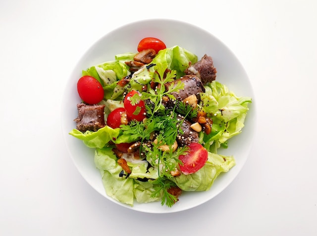

Salad
A salad is a dish consisting of mixed ingredients, usually vegetables, that are often served cold or at room temperature with a dressing or sauce. There are many types and variations of salads, such as garden salads, fruit salads, pasta salads, and many more

Panner
Paneer is a type of fresh cheese that is widely used in Indian cuisine. It is also known as Indian cottage. Paneer is made by curdling milk with lemon juice or vinegar, and then pressing the resulting curds into a firm block. Paneer does not melt when heated, and can be cut into cubes or slabs and added to various dishes.

Burgger
A burger is a food item that consists of a patty of ground meat, usually beef, placed inside a sliced bun or bread roll. Burgers are often served with cheese, lettuce, tomato, onion, pickles, bacon, or other toppings and condiments.